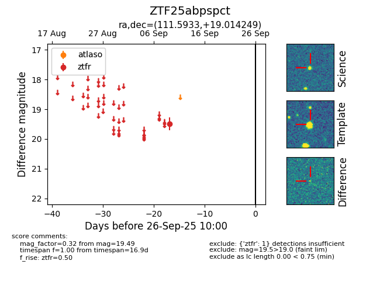

FINK: ZTF25abpspct
Lasair: ZTF25abpspct
ALeRCE: ZTF25abpspct
ZTF25abpspct (ztf,fink)
equatorial (ra, dec) = (111.5933,+19.01425)
galactic (l, b) = (199.4231,+16.04116)

last ztfr=19.49
1 ztfr detections